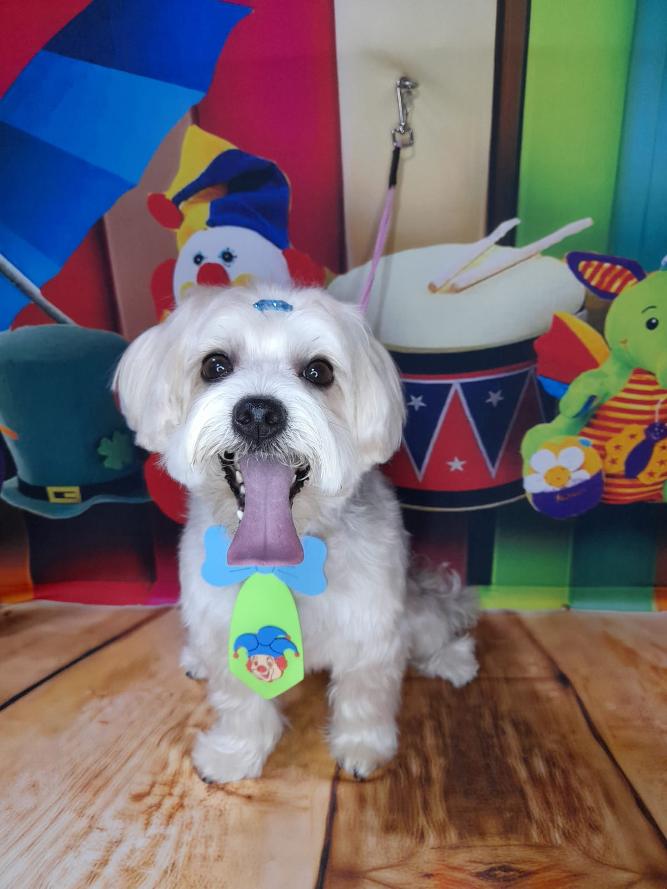
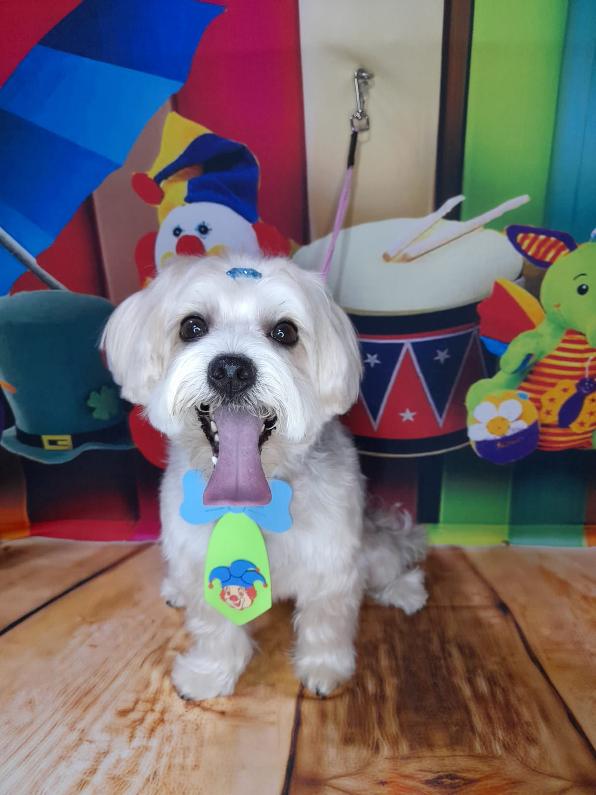

Conheçam o Stitch
 

Stitch, um adorável cachorrinho que é uma mistura perfeita de Maltês e Yorkshire. Ele é um verdadeiro guardião do seu território, sempre atento a qualquer movimento suspeito. Mas não se deixe enganar pela sua bravura, pois Stitch é extremamente carente e adora um carinho. Quando não está pedindo atenção, você pode encontrá-lo tirando uma soneca em qualquer cantinho quentinho, já que ele é friorento e adora se encostar em cobertores. Stitch é um companheiro leal e cheio de personalidade!
Além de ser um verdadeiro dorminhoco, Stitch tem uma energia contagiante quando está acordado. Ele adora brincar com seus brinquedos favoritos, especialmente aqueles que fazem barulho. Apesar de seu tamanho pequeno, Stitch tem um coração enorme e está sempre pronto para proteger sua família com toda a coragem de um grande cão.